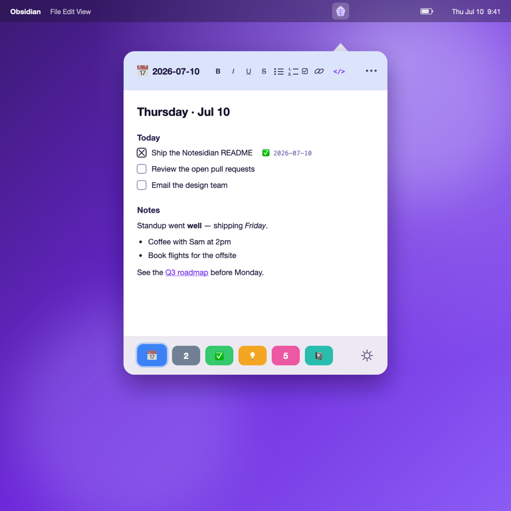
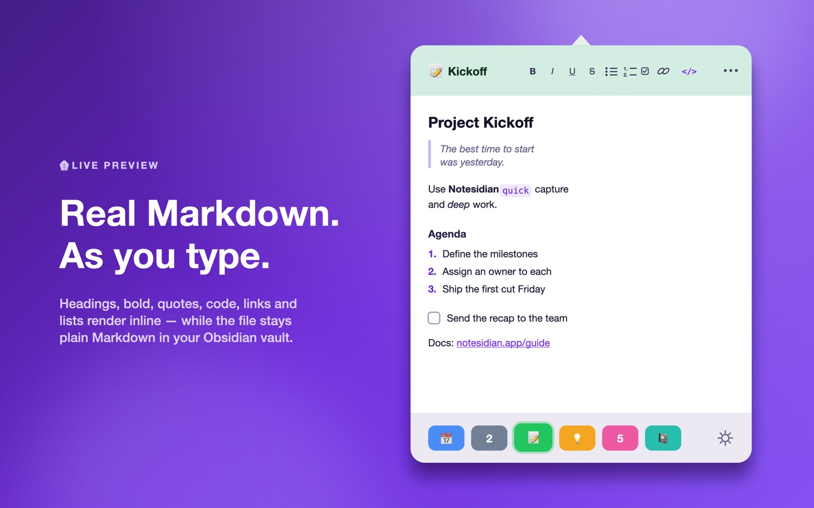
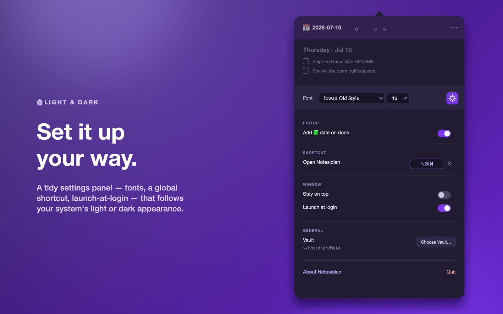
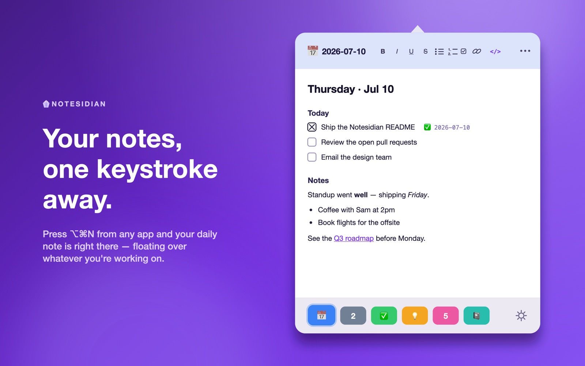
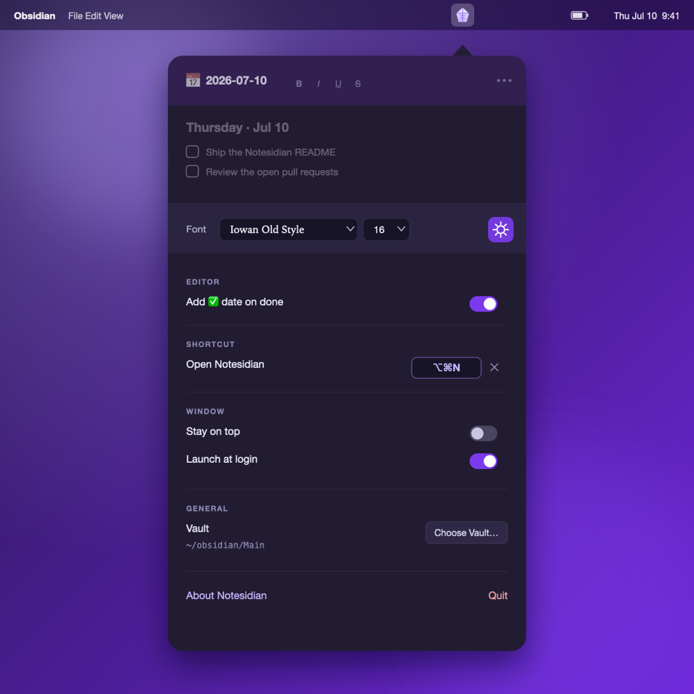

Your Obsidian notes, one keystroke away.
A fast, native macOS menu-bar companion for Obsidian. Hit a hotkey to reach the notes you use every day and edit them in a real live-preview Markdown editor, without leaving the app you're in.
On the Mac App Store now, for macOS 13 (Ventura) or later.

The editor caught up with Obsidian
Recent releases add the parts of Obsidian's editor people missed most — wikilinks, inline images, Vim keys, and a rendered view that gets out of your way — all in the same floating panel.
Markdown that gets out of the way
In preview the syntax reads as if it isn't there: the cursor skips it and edits land on the text you see. One ⌘K popover creates and edits links, wikilinks, callouts, and code blocks.
Syntax-highlighted code blocks
Fenced code renders as a boxed, monospace region with color for the common languages — JavaScript, Python, Swift, Rust, Go, and more.
Wikilinks & autocomplete
[[Note]] and [[Note|alias]] render as clickable links and open in Obsidian; typing [[ suggests notes from your vault.
Inline images
![[image.png]] (with Obsidian's |width), , and remote images render right in the editor's preview.
Tags, callouts & frontmatter
#tags become pills, > [!note] callouts render as colored blocks, and YAML frontmatter dims into a tidy properties strip.
Vim mode
Opt-in modal editing: normal, insert, and visual modes, with : commands and / search. Turn it on in Settings; it's off by default.
Fuzzy note search
The ⌘O picker matches by subsequence (type “prjx” to find Projects/Project X), ranks the closest first, and highlights the letters that matched.
Keyboard task toggle
⌘. turns a line into a task, or checks and unchecks the one you're on, stamping the ✅ done-date just like clicking the box.
Real Markdown, right where you work
A live-preview editor that runs on CodeMirror 6, the same engine Obsidian uses, floating over whatever you're doing.



Everything you reach for, nothing you don't
It's not a replacement for Obsidian. It reads and writes the exact same Markdown files in your vault, so everything shows up in Obsidian right away, and the other way around.
Instant access
Click the menu-bar crystal or hit the global hotkey (default ⌥⌘N, rebindable). It opens pointing at the icon and can float on top of every app, on every Space.
Six quick tabs
Six fixed, color-coded tabs along the bottom, each bound to a real note. Switch with ⌘1–⌘6; hold ⌘ to see the shortcuts light up.
Today's daily note
Point any tab at “Today's Note” and it always opens the current day's note, following your Obsidian Daily Notes folder, format, and template.
Real Markdown editor
Built on CodeMirror 6. Headings, bold, italic, code, lists, quotes, and links render inline while your file stays plain Markdown. Toggle to source with ⌘E.
Clickable tasks
- [ ] checkboxes render as real boxes; click to toggle done. Optionally stamp a ✅ YYYY-MM-DD date, matching the Obsidian Tasks format.
Icons & color
Give each tab an icon from 200+ SF Symbols or any emoji, searchable by name, so the right note is one glance away.
Autosave, always in sync
Every keystroke autosaves to the .md file, so Obsidian sees it right away. Edits you make in Obsidian flow back into Notesidian live.
Follows you across Macs
Your tabs and settings sync via iCloud, per vault, so your setup is the same on every Mac. The vault folder stays private to each machine.
Native & tidy
A real AppKit app: light and dark aware, launches at login, resizes to taste, with VoiceOver labels throughout. No Electron, no browser tab.

Set it up in a minute
Pick a reading font, record a global shortcut, turn on launch-at-login, and choose your vault, all in one place. Light or dark, Notesidian follows your system theme.
Built to keep your hands on the keys
Private by design
Notesidian works entirely on your Mac. It reads and writes only the vault folder you point it at, makes no network connections, and uses no analytics or tracking. Your notes never leave your machine. Read the privacy policy →
Get Notesidian
Notesidian 1.1 is on the Mac App Store. Download it and open your vault.
Requires macOS 13 (Ventura) or later and Obsidian with a local vault.